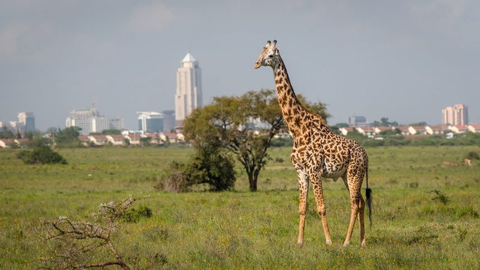

- +254 740 596771
- roamingnomadsafari@gmail.com
Samburu is located in the heart of Kenya, surrounded by the stunning landscapes of the Laikipia Plateau. This region is known for its diverse wildlife, including the “Big Five” (lion, leopard, elephant, buffalo, and rhino), as well as rare and endangered species such as the Grevy’s zebra and the reticulated giraffe.
.jpg)
.jpg)

.jpg)
.jpg)
.jpg)

.jpg)
Are you looking for an exceptional and an unforgettable Luxury Kenya safari tour? Look no further than Samburu, a luxury safari destination in Kenya. With its breathtaking landscapes, diverse wildlife, and luxurious accommodations, Samburu offers a once-in-a-lifetime experience for any safari enthusiast.
Samburu is located in the heart of Kenya, surrounded by the stunning landscapes of the Laikipia Plateau. This region is known for its diverse wildlife, including the “Big Five” (lion, leopard, elephant, buffalo, and rhino), as well as rare and endangered species such as the Grevy’s zebra and the reticulated giraffe.
But what sets Samburu apart from other Kenya safari destinations is its commitment to luxury and sustainability. Samburu is home to some of the most luxurious and eco-friendly safari lodges in Kenya, offering guests a truly unique and unforgettable experience.
Samburu offers a variety of luxury accommodations, from tented camps to private villas. Each lodge is designed to blend in with its natural surroundings, providing guests with an authentic safari experience.
The lodges are equipped with all the modern amenities you would expect from a luxury hotel, including comfortable beds, en-suite bathrooms, and private decks with stunning views. Some lodges even have their own private plunge pools, perfect for cooling off after a day of Luxury Kenya safari tours.
Budget PlansRoaming Nomads driver and Staff will pick up the clients on arrival in the airport or hotel in the morning, a short safari briefing will be conducted then the clients depart Nairobi by road heading towards Kenya’s northern frontier Samburu National Game reserve. Arriving in time for lunch at the luxury lodge, then proceed for the evening game drive. Samburu National game reserve is a beautiful park unique from other parks found in Kenya with its arid savannahs watered by the gorgeous Uaso Nyiro River, the park is one of the Kenya’s most protected and its home for many unique wild animals found in the north of equator, Some of the unique animals are the reticulated giraffe, Beisa oryxes, grevy zebras, Greater and lesser kudus, gerenuk gazelle. Dinner and overnight at the luxury lodge
Second day with Roaming Nomads, Wake up early morning for the full breakfast, then proceed for the adventure in the park for the viewing of the animals. Enjoy the viewing of the unique animals found in the park; such as cheetahs, lion, leopard, and the beautiful scenic of the park. Picnic lunch will be served in the park. Dinner and overnight at the luxury lodge
Third day with Roaming Nomads, wake up very early morning to prepare for the morning game drive inside the Samburu game reserve. After the morning game drive return to the luxury lodge for the full breakfast then depart for Nairobi by road, Lunch will be served en route, arriving in Nairobi in the afternoon and the driver guide will drop the clients in their hotel or airport and your safari ends with great memories from Roaming Nomads.
Samburu is committed to preserving the natural environment and wildlife of the Laikipia Plateau. The lodges are built using sustainable materials and operate on renewable energy sources, such as solar power. They also have strict waste management practices in place to minimize their impact on the environment.
In addition, Samburu works closely with local communities to support conservation efforts and promote sustainable tourism. By choosing Samburu luxury safari in Kenya for your safari adventure, you are also contributing to the preservation of this beautiful region.
A typical day at Samburu starts with an early morning game drive, where you’ll have the opportunity to spot a variety of wildlife in their natural habitat. Your experienced safari guide from Roaming Nomads will take you through the Laikipia Plateau, pointing out different species and sharing interesting facts about the animals and their behaviors.
After the game drive, you’ll return to your luxury lodge for a delicious breakfast, made with fresh, locally sourced ingredients. You can then spend the rest of the morning relaxing at the luxury lodge, taking a dip in the pool, or participating in optional activities such as guided nature walks or cultural visits to nearby villages.
In the afternoon, you’ll head out for another game drive, where you may encounter different animals and witness the stunning sunset over the African savannah. After the game drive, you’ll return to the luxury lodge for a gourmet dinner, followed by drinks around the campfire and stargazing under the African sky. and you safari will end with great memories from Samburu Luxury safari in Kenya.
✅All applicable National Park Entrance fees
✅Transport By 4×4 land cruiser Safari jeep customized open roof
✅Round trip transport from Nairobi to the designated National Park
✅Extensive Game drives while in the national parks
✅Three
meals a day while on the Safari, Breakfast, lunch and dinner
✅Bottled drinking water
✅Finest accommodation in lodge or camp
✅Airport picks up on arrival in Nairobi
✅Services of a qualified proffessional driver guide